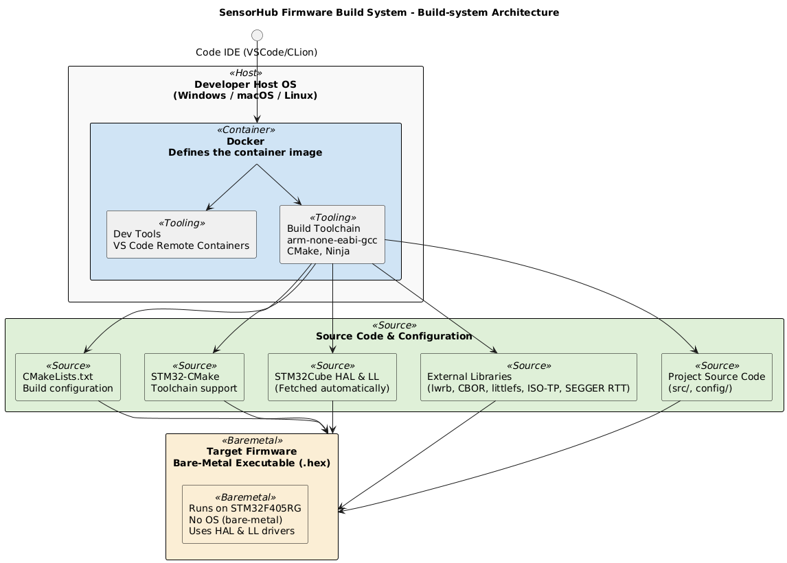

Build Overview
This document explains why certain design decisions were made (Rationale) and how the current build system is structured (Overview).
Current Build System Overview

Components
.devcontainer/
Defines a Docker image with:
arm-none-eabi-gcccross-compilerCMakeand build tools- Helpful extensions for debugging
- Ensures identical toolchains for everyone.
stm32-cmake
Provides CMake support for STM32:
- Auto-fetches STM32Cube HAL and CMSIS
- Sets up linker scripts, startup files, and device headers
- Generates .elf and size reports.
External Libraries
Pulled automatically with CMake FetchContent:
SEGGER RTTfor logginglittlefsfor onboard flash storageISO-TPfor CAN protocol supportCBORfor data encodingManikin Software Librariesfor sensor & flash drivers
Project Structure
.
├── .devcontainer/ # VS Code & Docker dev environment
├── config/ # Board and system configurations
├── external/ # Third-party libraries (pulled automatically)
├── src/ # Core firmware logic (sampling, CAN, storage, CLI)
├── CMakeLists.txt # Main build configuration
This folder structure was chosen after a few rounds of refactoring. As complexity adds up quickly and the files that are changed most of the time are the Core firmware logic (aka business logic) files and the board_config.h header. Most of the other sources are used to define the toolchain, startup and hal-drivers. Which are seperately put into the config/ directory, to make sure that the project is manageable.
Another thing to mention about this folder structure is that most drivers which are crucial for acquisition (think about timers, error-handling, sensor-drivers, flash-drivers and basic types) are inside a seperate git-repository. As these libraries need a lot of testing, seperating them makes testing, CI and maintenance way easier and targeted.
Rationale (Architecture Decision Records)
ADR-001: Use Development Container (.devcontainer) and Docker
Status: Accepted
Context:
- Developers work on different host platforms (Windows, macOS, Linux).
- STM32 GCC toolchains and dependencies can be error-prone and inconsistent to install locally.
- Consistency and reproducibility are critical for embedded builds.
Decision:
- A Docker image defines the complete development environment.
.devcontainerconfigures this for VS Code Remote Containers, making it easy to start coding with zero local setup.
Consequences:
- All developers build and debug with the same toolchain.
- Builds are portable and reproducible.
- Local environment conflicts are eliminated.
ADR-002: Use STM32 HAL and Low-Layer Drivers for Bare-Metal
Status: Accepted
Context:
- The firmware runs without an operating system for maximum control and minimal overhead.
- STM32Cube HAL provides vendor-maintained drivers for peripherals and startup code.
Decision:
- Use the STM32Cube HAL and LL drivers to configure and access hardware peripherals (USB, CAN, SPI, GPIO, etc.).
Consequences:
- Developers benefit from proven, tested drivers.
- Peripheral configuration is simpler and aligns with STM32CubeMX tooling.
- Fine-grained control is possible when needed using LL APIs.
ADR-003: No RTOS
Status: Accepted
Context:
- The firmware requirements are simple: periodic sensor sampling, CAN bus communication, USB data transfer.
- Adding an RTOS would increase complexity and resource usage unnecessarily.
Decision:
- Implement a bare-metal main loop without an operating system.
Consequences:
- Simpler build and smaller binary size.
- Deterministic execution with manual concurrency handling.
- Limited scalability for more complex scheduling needs.
ADR-004: Use CMake as the Build System
Status: Accepted
Context:
The SensorHub firmware is an embedded project targeting the STM32F405RG microcontroller. Building bare-metal firmware requires managing:
- Compiler flags for C, C++, and assembly files
- Linker scripts, startup files, and device headers
- External dependencies (STM32 HAL, LL drivers, USB middleware, third-party libraries like SEGGER RTT, littlefs, CBOR, ISO-TP)
- Different board configurations (SensorHub1, SensorHub Head)
- Cross-platform toolchain support for developers using Windows, macOS, or Linux
Historically, embedded STM32 projects often used IDE-specific build systems (e.g., STM32CubeIDE, IAR EWARM, or Makefiles). However, these solutions:
- Are not portable across OSes
- Are hard to automate for CI/CD
- Lack modern dependency management
- Become fragile as the project grows.
Decision:
We will use CMake as the build system for this firmware project. Specifically:
- Use the stm32-cmake module to handle STM32-specific setup (toolchain, HAL, CMSIS, startup files, and linker scripts).
- Use CMake’s
FetchContentto automatically pull and version-lock external libraries (HAL, USB middleware, third-party libraries). - Integrate easily with modern development tools, including the
.devcontainerand VS Code extensions.
Consequences:
Cross-platform: Developers on Windows, macOS, and Linux can build identically using the same CMake configuration inside Docker.
Maintainable: Dependency versions and toolchain settings are declarative and version-controlled.
IDE-independent: Developers can choose their preferred editor or build entirely in CI/CD pipelines.
Scalable: Multiple board configurations and modular targets are easily managed with modern CMake idioms.
Future-proof: CMake is widely supported, actively maintained, and integrates well with other tooling (testing, static analysis, packaging).
Alternatives Considered
-
Makefiles: Simple but fragile for growing projects with multiple configurations and external dependencies.
-
Vendor IDE (STM32CubeIDE): Not portable, locks developers to a specific IDE, harder to script or integrate in headless CI/CD.
-
PlatformIO: Popular for hobby projects but less flexible for precise control over STM32 HAL and linker scripts, and overkill for bare-metal with complex vendor libraries.
Chosen: Use CMake with stm32-cmake for a robust, portable, and modern build system.
ADR-005: Use stm32-cmake instead of STM32Cube’s official CMake support
Status: Accepted
Context
STM32 firmware builds require correct setup for:
- Toolchain configuration for ARM GCC
- Startup files, linker scripts, and vector tables
- Vendor HAL, LL drivers, and middleware (e.g. USB Device stack)
- Board-specific configurations
- Flexible build options for multiple firmware variants
Historically, STM32Cube projects relied on IDEs (STM32CubeIDE, Keil, IAR) with autogenerated Makefiles or project files.
Recently, STM32Cube added official CMake support in some HAL packages (via .cmake files generated by CubeMX or included in Cube firmware packs).
However, the built-in STM32Cube CMake support:
-
Is incomplete, as not all middleware (e.g. USB, BSP) is structured as modular CMake targets.
-
Generates boilerplate CMake output that’s not very idiomatic or maintainable.
-
Tends to assume IDE usage alongside CMake (CubeIDE or STM32CubeMX).
-
Is harder to version-lock or update cleanly inside a container or CI/CD pipeline.
Decision
We will use stm32-cmake instead of the STM32Cube built-in CMake modules.
Reasons:
-
Full CMake-native approach:
stm32-cmakecleanly wraps HAL, LL, middleware, and startup files as modular CMake targets. -
Version control: Uses CMake’s
FetchContentto fetch the correct HAL version automatically. -
Toolchain consistency: Provides a tested GCC toolchain file (
stm32_gcc.cmake) that works cross-platform inside Docker. -
Minimal boilerplate: Reduces custom linker and startup code maintenance.
-
Proven in practice: Community-maintained and widely adopted in STM32 open-source projects.
Consequences
-
Faster onboarding — developers don’t have to handle raw STM32Cube-generated CMake or legacy Makefiles.
-
Works seamlessly in Docker dev containers and headless CI/CD.
-
Keeps the build idiomatic for modern CMake workflows.
-
Easy to swap or upgrade HAL versions as needed.
Alternatives Considered
-
STM32Cube’s built-in CMake: Works for basic HAL usage, but doesn’t modularize all middleware, and generates non-idiomatic CMake. Limited community adoption so far.
-
Manually maintained CMake: Higher effort and risk of subtle errors; more fragile across MCU variants.
Chosen: Use stm32-cmake for a more robust, developer-friendly CMake build that plays nicely with Docker, VS Code dev containers, and modern CI/CD pipelines.